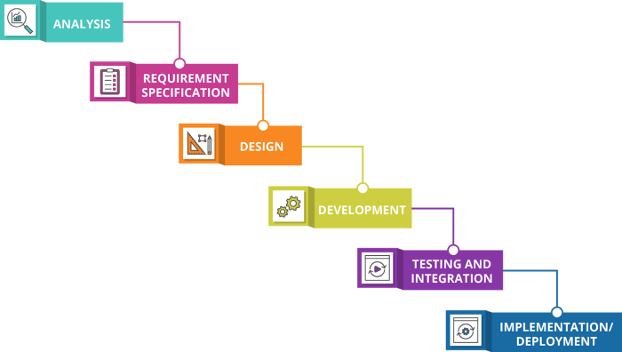
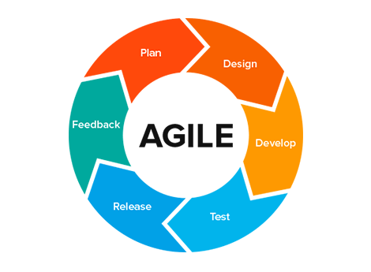

Development Life Cycle
Over the last few weeks you have been taking part in the planning process for a new application; your final project website. All of the planning you have been doing is the precursor the Development Life Cycle. We started back in Week 7 where you learned about purpose, audience, and mission statements. We also practiced elevator pitches. Last week we focused on some key site planning principles using Family Search's style guide. Today we want to bring these assignments together and discuss the development cycle in better detail. Please start by watching the following video:
Development Life Cycle ModelsIn the following sections we will summarize the planning process and development life cycle for you. Please pay careful attention to this material because you will be quizzed on it this week.
Summary:
-
Plan
Every new project starts with the planning stage. The planning process for a new application could take several planning cycles. The first cycle could focus on gather data and surveying potential users. This would allow you to gauge interest in your idea as well as raise or secure funds for its development. If there is little interest in your idea now, it may indicate you need to rethink your product or put the idea on hold.
The next cycle would include things like audience statements, personas, and skateboarding to build out your design and start establishing a scope for the project. Creating clear goals early on helps insure a project stays on track and focused. Good initial planing is a guardrail that keeps things from going over the edge and helps protect your project from feature creep; the excessive ongoing expansion or addition of new features in a product.
It is during these planning cycles that you would also develop things like your purpose statement, audience statement, and style guide. Eventually you will reach a point in your planning process where it is time to pass on the plans to a development team.
-
Develop
The development life cycle starts when the applications plans, goals, budgets, and so are are approved and handed off to the development team. Development teams, also referred to as the dev team, needs all of this information so they know not only what to build, but how. Having a solid foundation of plans helps dictate timelines, software choices, language choices, and so on.
One of the key elements a dev team will often decide on first is the framework the project will use. There are many primary types and sub-types of frameworks a project could use, but we will focus on the two most popular: Waterfall and Agile.
Waterfall:

The waterfall model is a breakdown of project activities into linear sequential phases, where each phase depends on the completion of the previous phase. Like a real life waterfall, the principle is you go downstream with the flow of the water, once you go over a waterfall you don't go back up. Here is a high level example of waterfall in action:
Agile:

The agile model is an approach based on iterative development. The project scope and requirements are laid down at the beginning of the development process. The agile model then break tasks into smaller iterations or parts that do not directly involve long term planning. Plans regarding the number of iterations, the duration, and the scope of each iteration are clearly defined in advance. The cycle then repeats over and over until the final product (the deliverable) is reach. Here is an example of this process: -
Maintain
The final step in the development life cycle is to pass your application off to the production team. They will handle getting it out to production and providing general maintenance. If there is every a major problem with the application or you decide to add or upgrade it the development life cycle starts over again. We plan, develop, and maintain applications perpetually until they are replaced by other applications or decommissioned and brought offline.
Many Hats:
Remember that in a large organization you may only have a small set of focused responsibilities. In a smaller company, or a setting like this class, you will have to wear many hats. You may find yourself being responsible for several different parts of the development life cycle.